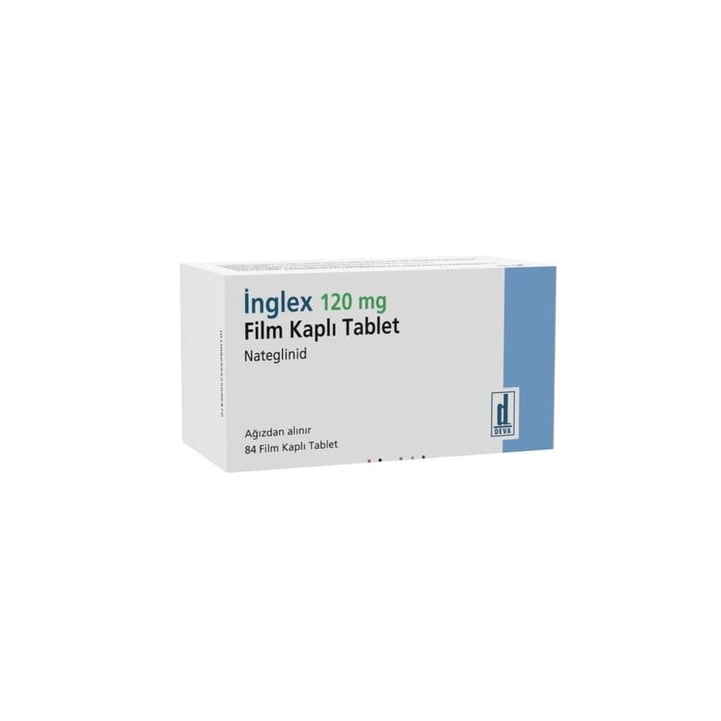

Inglex 120 mg Film Kaplı Tablet, 84 Adet

Ne için kullanılır
KT · Bölüm 1İNGLEX tabletler, 84 film kaplı tablet içeren blister ambalajlarda sunulmaktadır.
İNGLEX, kan şekerini (glukoz) düşürmek için kullanılan ve ağız yoluyla alınan bir ilaçtır (bu tür ilaçlara oral antidiyabetikler adı verilir).
İNGLEX, tip 2 diyabetli (şeker) yetişkin hastaları tedavi etmek için kullanılır. Bu şeker hastalığı (diyabet) türü, insüline bağımlı olmayan diabetes mellitus olarak da adlandırılır. Kandaki şeker seviyesini kontrol etmeye yardımcı olur. Doktorunuz size İNGLEX’i tek başına metforminin maksimum tolere edilebilen dozuna rağmen metforminin tek başına yeterli olmadığı durumlarda metformin ile birlikte reçete edecektir.
İnsülin (pankreas adı verilen bir organ tarafından üretilir), özellikle yemeklerden sonra kan şekeri düzeylerinin düşürülmesine yardımcı olan bir maddedir. Tip 2 şeker (diyabet) hastalarında, vücut
insüline gerektiği şekilde yanıt vermez ve yanıt vermeye yemeklerden sonra yeterince hızlı bir şekilde başlamayabilir. İNGLEX, pankreası insülini daha hızlı üretmesi için uyararak etki gösterir ve bu etki yemeklerden sonra kan şekerinin kontrol altında tutulmasına yardımcı olur.
İNGLEX tablet, alındıktan çok kısa bir süre sonra etkisini göstermeye başlar ve vücuttan hızla atılır.